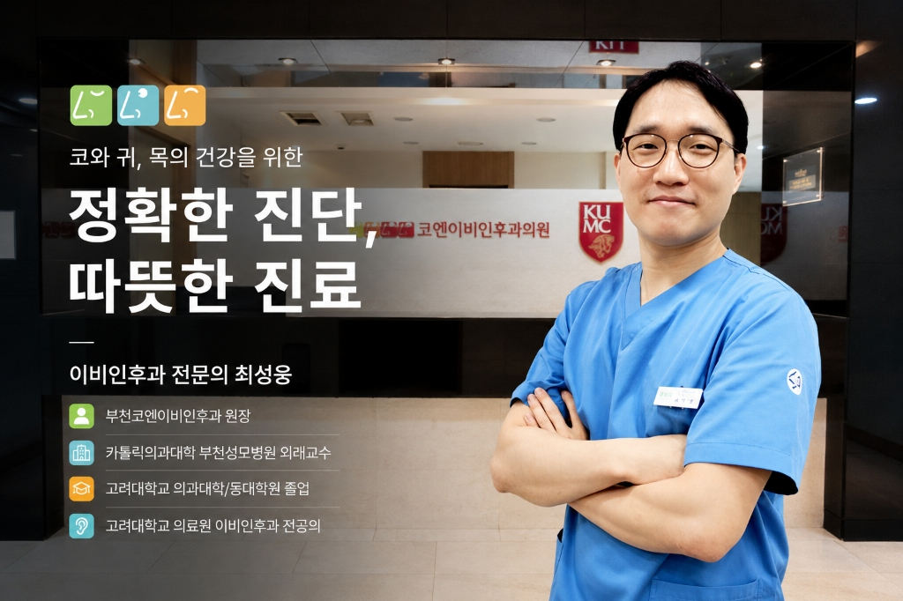

부천 수면클리닉
건강보험 80% 적용 수면다원검사 & 맞춤 양압기
부천 수면다원검사 · 수면무호흡증 · 코골이 · 양압기 치료
부천코엔이비인후과 수면클리닉은 반복되는 코골이, 잠자는 동안 숨이 멎는 느낌, 자고 일어나도 개운하지 않은 낮 시간의 심한 피로감이 있는 분들을 위해 부천 수면다원검사를 진행하고 있습니다. 수면다원검사는 수면 중 뇌파, 호흡 기류, 혈중 산소포화도, 심전도, 코골이 강도 등을 밤새 종합적으로 기록하여 수면무호흡증의 유무와 중증도(경도·중등도·중증)를 객관적인 수치로 진단하는 정밀 검사입니다.
건강보험 급여 기준에 해당하는 경우 보험 적용을 받아 부담을 줄일 수 있으며, 검사 결과와 원인에 따라 양압기(CPAP) 처방, 구강내 장치, 자세 교정, 생활습관 개선 등 단계별 맞춤 치료를 안내해드립니다. 부천 및 인근 지역에서 코골이·수면무호흡증으로 수면다원검사를 고려하고 계시다면 부천코엔이비인후과로 편하게 문의해 주세요.
부천 수면다원검사 진행 절차
-
1
초진 상담 및 문진
코골이, 무호흡, 주간 졸림 등 증상과 생활습관, 기저질환 여부를 확인하고 이비인후과적 진찰(비강·구강·인후두 구조 확인)을 진행합니다. 이 과정에서 수면다원검사가 필요한지, 건강보험 급여 대상에 해당하는지를 함께 안내해드립니다.
-
2
수면다원검사 예약 및 사전 준비
검사 가능일을 예약하고, 검사 전 카페인·음주 제한, 평소 수면 패턴 유지 등 정확한 결과를 위한 준비 사항을 안내합니다.
-
3
야간 수면다원검사 시행
뇌파, 안전도, 근전도, 심전도, 호흡 기류, 혈중 산소포화도, 코골이 소리 등 여러 생체 신호를 밤새 동시에 기록합니다. 이를 통해 수면 단계, 무호흡·저호흡 발생 횟수(AHI 지수), 산소포화도 저하 정도를 객관적으로 측정합니다.
-
4
판독 및 결과 상담
기록된 데이터를 판독하여 수면무호흡증의 유무와 경도·중등도·중증 여부를 확인하고, 담당의가 결과를 토대로 원인과 치료 방향을 상세히 설명해드립니다.
-
5
맞춤 치료 계획 수립
검사 결과에 따라 양압기(CPAP) 처방, 구강내 장치, 수면 자세 교정, 체중 관리 등 생활습관 개선, 필요 시 이비인후과적 수술 등 단계별 치료 계획을 함께 상의합니다. 양압기 처방 후에도 압력 적응과 마스크 착용감 등을 주기적으로 점검하며 관리해드립니다.
부천 수면다원검사·양압기 자주 묻는 질문
Q. 코골이만 있어도 수면다원검사를 받을 수 있나요?
네, 가능합니다. 코골이는 상기도가 좁아지면서 나타나는 대표적인 증상으로, 수면무호흡증의 신호일 수 있습니다. 코골이와 함께 주간 졸림, 아침 두통, 자다가 숨이 막히는 느낌 등이 동반된다면 검사를 통해 원인과 중증도를 확인해보시는 것을 권합니다.
Q. 검사는 얼마나 걸리고, 결과는 언제 알 수 있나요?
수면다원검사는 하룻밤(야간) 동안 시행되며, 검사 후 데이터 판독에 일정 시일이 소요됩니다. 정확한 검사 소요 시간과 결과 상담 일정은 초진 상담 시 개인별로 안내해드립니다.
Q. 건강보험이 적용되나요?
수면다원검사와 양압기 치료는 일정한 급여 기준(임상 증상, 검사 결과 등)을 충족하는 경우 건강보험이 적용됩니다. 급여 대상 여부는 환자분의 증상과 검사 결과에 따라 달라지므로, 상담을 통해 개별적으로 확인해드리고 있습니다.
Q. 양압기는 평생 사용해야 하나요?
양압기는 수면 중 기도를 열어주어 무호흡을 막아주는 치료 기기로, 사용 기간은 무호흡증의 원인과 중증도, 체중 변화, 생활습관 개선 정도에 따라 달라질 수 있습니다. 정기적인 진료를 통해 사용 상태를 점검하며 치료 계획을 조정합니다.
부천 수면다원검사 & 코골이·양압기 정보글
24
부천코엔이비인후과 원장 최성웅•
수면다원검사, 병원에서 잠을 자면서 검사를 하는 이유.
수면다원검사는 보통 수면검사실에서 하룻밤 잠을 자며 수면과 호흡 상태를 종합적으로 확인하는 검사입니다.

부천코엔이비인후과 원장 최성웅•
아침에 반복되는 두통, 수면무호흡증 증상일 수 있습니다.
🌅 아침에 일어나면 머리가 아픈 이유, 혹시 수면무호흡증 때문일까요? “잠은 충분히 잔 것 같은데 아침마다 머리가 아파요.” “일어나면 머리가 무겁고 개운하지 않아요.” “아침 두통이 자주 생기는데 수면무호흡증과 관련이 있을까요?”...

부천코엔이비인후과 원장 최성웅•
술을 마시면 왜 코골이가 심해질까?
술은 기도 주변 근육을 이완시켜 기도를 좁게 만들 수 있어 코골이를 더 심하게 하고 수면무호흡증을 악화시킬 수 있습니다.

부천코엔이비인후과 원장 최성웅•
배우자의 코골이, 참지 마세요!
배우자의 심한 코골이는 단순한 잠버릇일 수도 있지만, 숨을 멈추거나 헐떡이는 모습이 동반된다면 수면무호흡증을 의심할 수 있습니다.


부천코엔이비인후과 원장 최성웅•
수면무호흡증 치료에서 체중 감량이 얼마나 중요할까?
수면무호흡증과 체중의 관계를 알아봅니다. 체중 감량이 수면무호흡증에 미치는 영향, 10% 체중 감량의 의미.


![수면무호흡증 치료, 무조건 수술부터 해야 할까요? [부천 수면다원검사 안내]](https://huxefngduhlyvpxpmfsq.supabase.co/storage/v1/object/public/blog-images/c15584e5-fb9d-441d-862b-245b6ee1bbac/1788619205351-33fd7d58-2764-4b7b-9a88-0c4eac405c1f.png)
부천코엔이비인후과•
수면무호흡증 치료, 무조건 수술부터 해야 할까요? [부천 수면다원검사 안내]
수면무호흡증은 수술이 먼저가 아니라 정확한 진단이 먼저입니다. 부천코엔이비인후과가 알려드리는 중증도별 치료 순서.


부천코엔이비인후과•
부천 수면무호흡증 합병증, 방치하면 위험한 이유 | 부천 수면클리닉
수면무호흡증을 방치할 경우 발생할 수 있는 심혈관질환, 대사질환 등 주요 합병증을 정리했습니다.


부천코엔이비인후과•
양압기 마스크 종류와 착용 팁! 왜 이비인후과 수면클리닉에서 관리받아야 할까?
나잘(Nasal), 필로우(Pillow), 풀페이스(Full-face) 등 다양한 양압기 마스크 중 나에게 맞는 타입은 무엇일까요? 공기 누출 없이 편안하게 적응하는 핵심 노하우를 공개합니다.

부천코엔이비인후과•
부천 이비인후과 전문의가 직접 설명하는 수면다원검사 검사 당일 진행 과정과 주의사항
검사 당일 어떻게 진행되는지 궁금하신가요? 내원부터 센서 부착, 숙면, 익일 퇴원 및 결과 상담까지 부천코엔이비인후과의 원스톱 프로세스를 상세히 안내해 드립니다.

부천코엔이비인후과•
단순 잠버릇이 아닙니다! 수면무호흡증 원인과 방치 시 유발되는 위험한 5대 합병증
숨이 멎는 수면무호흡증을 단순한 피로 탓으로 넘기면 고혈압, 뇌졸중, 당뇨, 심장마비 위험이 급증합니다. 이비인후과 전문의가 전하는 조기 진단의 중요성을 확인하세요.
![[부천 양압기] 코골이와 수면무호흡증 비수술 치료의 표준! 양압기(CPAP) 건강보험 처방 및 적응 가이드](https://huxefngduhlyvpxpmfsq.supabase.co/storage/v1/object/public/blog-images/c15584e5-fb9d-441d-862b-245b6ee1bbac/1788448775281-76c60def-8d2a-44f2-a7ac-3468801dd986.png)
부천코엔이비인후과•
[부천 양압기] 코골이와 수면무호흡증 비수술 치료의 표준! 양압기(CPAP) 건강보험 처방 및 적응 가이드
수면무호흡증의 가장 안전하고 효과적인 1차 치료법인 양압기(CPAP). 월 1~2만 원대로 렌탈 가능한 건강보험 지원 혜택과 전문의 1:1 압력 처방의 중요성을 정리했습니다.
![[부천 수면다원검사] 건강보험 적용으로 부담 없이 받는 코골이·수면무호흡 검사 안내](https://huxefngduhlyvpxpmfsq.supabase.co/storage/v1/object/public/blog-images/c15584e5-fb9d-441d-862b-245b6ee1bbac/1788448721431-fd6a8d79-b7c2-43f6-8e65-f420b4e63723.jpg)
부천코엔이비인후과•
[부천 수면다원검사] 건강보험 적용으로 부담 없이 받는 코골이·수면무호흡 검사 안내
밤새 심한 코골이와 함께 숨이 컥컥 막히는 수면무호흡 증상이 있다면 수면다원검사는 필수입니다. 건강보험 적용 기준 및 부천코엔이비인후과의 쾌적한 1인 수면검사실 프로세스를 안내해 드립니다.
등록된 수면클리닉 블로그 포스팅이 없습니다.